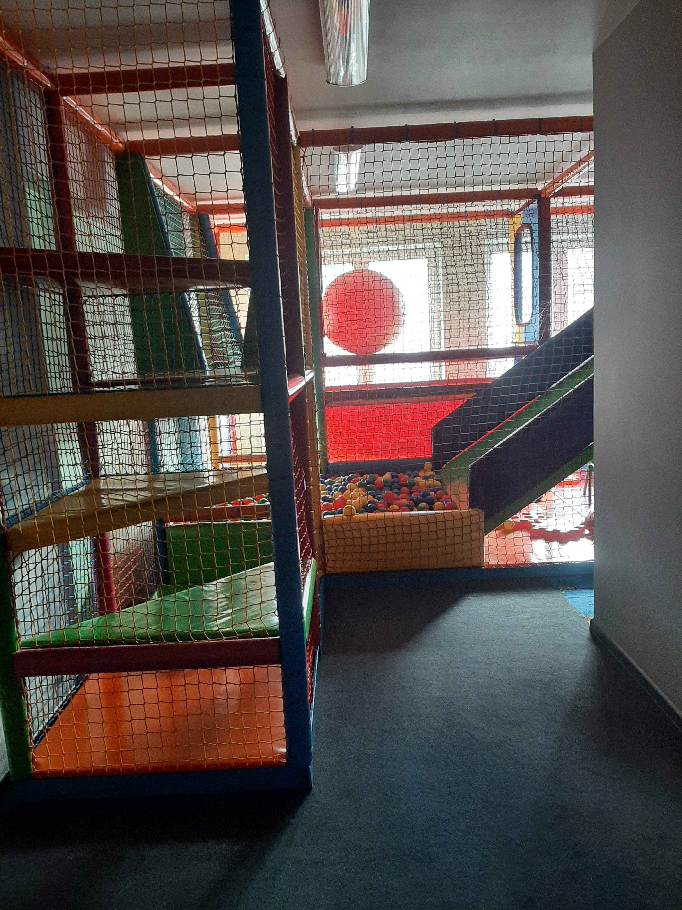
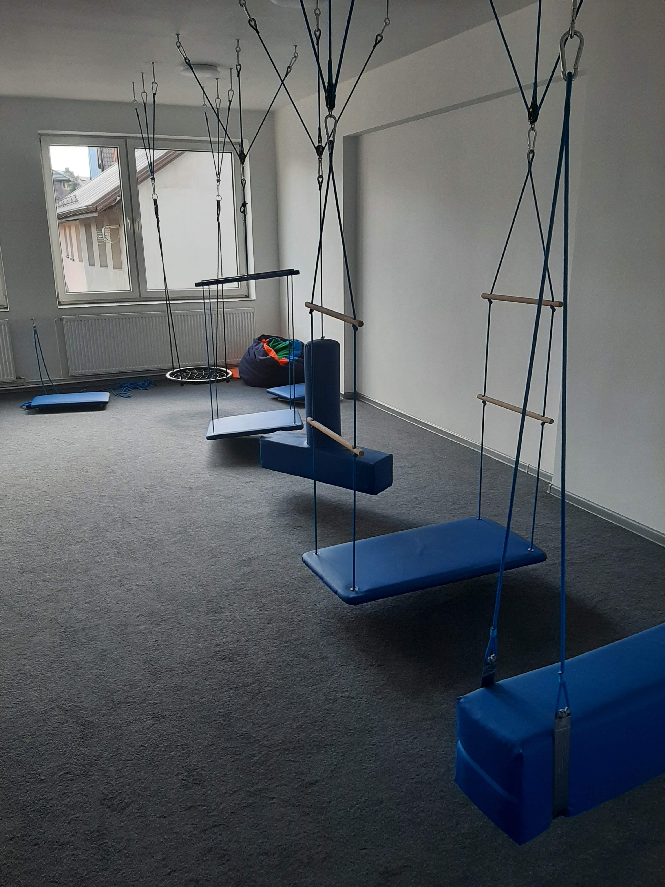
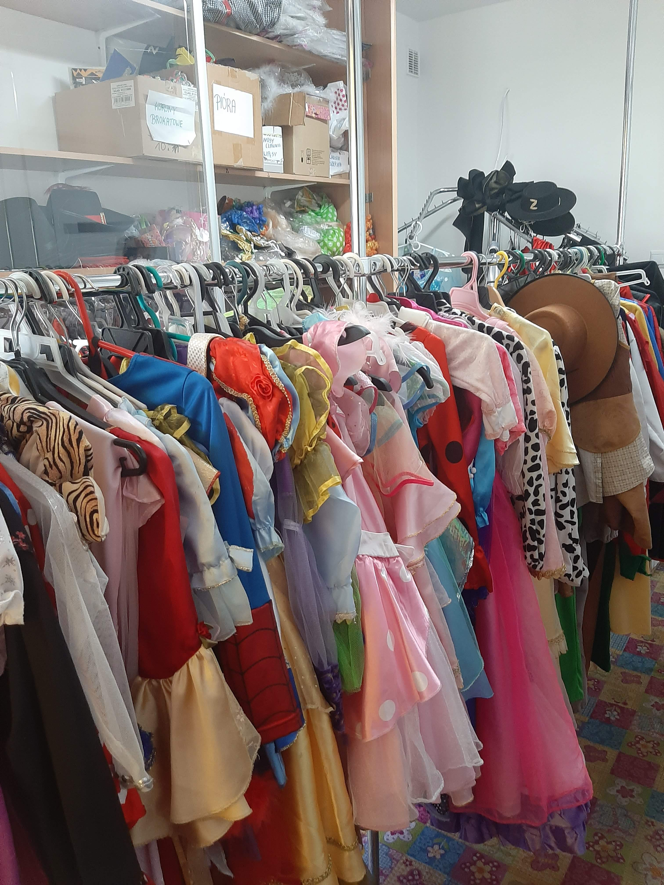

Gabinet psychologiczny

Gabinet terapii dzwiękiem
Gabinet zabawy i ruchu 
Gabinet terapii integracji sensorycznej 
Gabinet terapii światłem

Wypożyczalnia strojów 
Gabinet analizy psychologicznej i gabinet masażu uwalniajacego od napięć
Oferuje:
konsultacje psychologiczne
wstęp przed diagnoza i do diagnozy psychologicznej, pedagogicznej, integracji sensorycznej
diagnozę pod kątem zaburzeń integracji sensorycznej
masaż głowy, karku, przedramion uwalniajacy do napięć (zwłaszcza dla osób zmagajacych się z ndamiernym napięciem mięsniowym, stresem, siedzacycm trybem pracy)
a także analize indywidualnych potrzeb, trening asertywnosci, trening kreatywnosci oraz inne zajęcia organizowane pod potrzeby podopiecznych gabinetu
Gabinet terapii dźwiekiem
Gabinet terapii słuchowej
Terapia słuchowa nazywana także treningiem słuchowym lub terapią zaburzeń procesów przetwarzania słuchowego Terapia ma na celu pomóc w zmniejszeniu nadwrazliwosci na dzwięki, wzmocnieniu pamięci słuchowej, poprawie komunikacji. Pomocna jest także w doskonaleniu umiejętnosci czytania, pisania ze słuchu i uczenia się drogą słuchową, które korzystnie przedładają się na osiąganie lepszych wyników w nauce.
trening słuchowy
trening uwagi i koncentracji
Gabinet terapii integracji sensorycznej
Sala integracji sensorycznej:
Terapia integracji sensorycznej nazywana także terapią SI lub terapią zaburzeń procesów integracji sensorycznej. Terapia Integracji Sensorycznej poprawia funkcjonowanie człowieka w wielu różnych obszarach i aspektach:
koordynuje integralność i współpracę zmysłu wzroku, słuchu, węchu, smaku i dotyku,
rozwija motorykę małą, dużą, orientację przestrzenną i zdolność do planowania ruchu,
integruje czynności odruchowe,
kontroluje rozwój reakcji równoważnych i poziom napięcia mięśniowego,
utrzymuje plastyczność neuronalną, czyli zdolność mózgu do zmian i modyfikacji,
w zależności od potrzeb, wycisza lub wzmacnia zaburzone obszary sensoryczne,
wspomaga umiejętność czytania, pisania, liczenia, koncentracji uwagi, kontroli emocjonalnej i samoakceptacji,
Gabinet terapii światłem
Sala integracji sensorycznej:
Terapia integracji sensorycznej nazywana także terapią SI lub terapią zaburzeń procesów integracji sensorycznej. Terapia Integracji Sensorycznej poprawia funkcjonowanie człowieka w wielu różnych obszarach i aspektach:
koordynuje integralność i współpracę zmysłu wzroku, słuchu, węchu, smaku i dotyku,
rozwija motorykę małą, dużą, orientację przestrzenną i zdolność do planowania ruchu,
integruje czynności odruchowe,
kontroluje rozwój reakcji równoważnych i poziom napięcia mięśniowego,
utrzymuje plastyczność neuronalną, czyli zdolność mózgu do zmian i modyfikacji,
w zależności od potrzeb, wycisza lub wzmacnia zaburzone obszary sensoryczne,
wspomaga umiejętność czytania, pisania, liczenia, koncentracji uwagi, kontroli emocjonalnej i samoakceptacji,